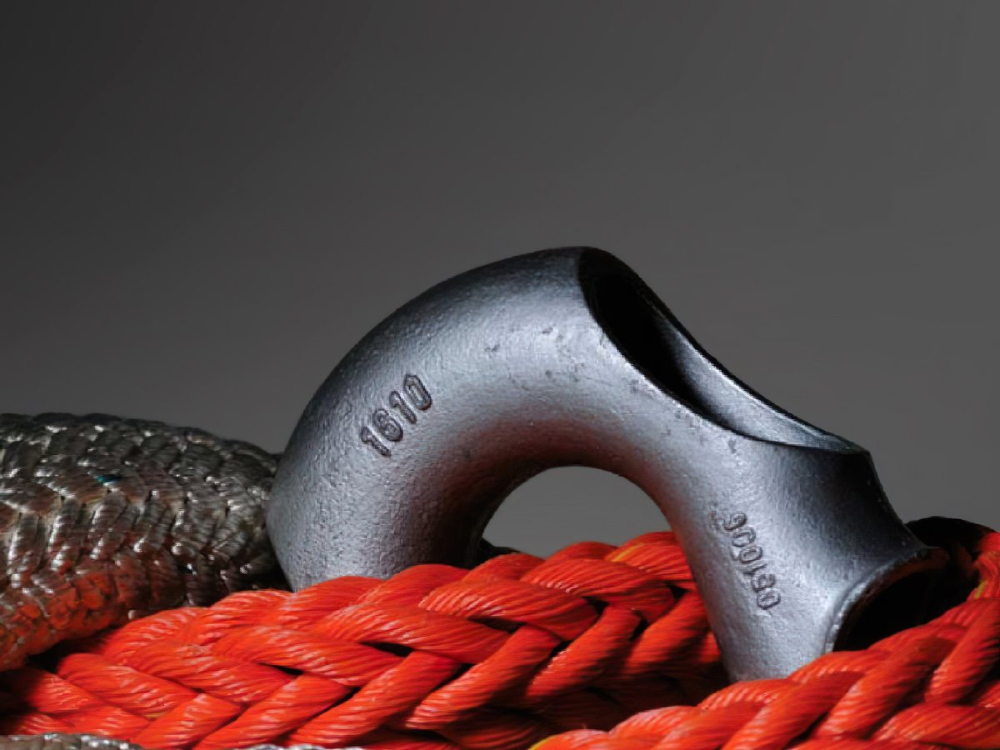

عن الشركة
Crafting excellence منذ عام 1929
Cordoaria São Leopoldo Original Ltda شركة برازيلية أصيلة، معترف بها دوليًا كواحدة من كبرى الشركات المصنّعة لحبال الألياف الصناعية في العالم.
القطاعات التي نخدمها
- الأوفشور
- الطاقة ونقل الكهرباء
- رفع الأحمال
- التعدين
- الممرات المائية الداخلية
- الزراعة
- الرياضة
- أنظمة الإنزال والاسترجاع في المياه العميقة
المقر الرئيسي في ساو ليوبولدو (RS) · المكتب التجاري في ريو دي جانيرو (RJ)، البرازيل
- 1929تأسيس الشركة. إنتاج حبال وكابلات من الألياف الطبيعية، بشكل رئيسي لشركات الكهرباء في جنوب البرازيل.
- الستينياتمع الألياف الصناعية بأقطار أكبر، بدأت CSL بتوريد الحبال لقطاع الصيد.
- السبعينيات والثمانينياتاشتهرت بحبالها ذات 8 و12 جديلة، ورسّخت مكانتها في سوق الأوفشور كمصنّع للحبال مزدوجة التجديل.
- التسعينيات والعقد الأول من الألفيةريادة عالمية: بالشراكة مع Petrobras، طوّرت CSL أول حبال بوليستر للتثبيت في المياه العميقة.
- العقدان الأول والثاني من الألفيةأدخلت ألياف HMPE عالية الأداء إلى السوق البرازيلية ووسّعت نشاطها إلى قطاعات جديدة.
- من 2023 فصاعدًاقرابة قرن من الخبرة في خدمة مشاريع مصممة خصيصًا لكل عميل.
من نحن
Cordoaria São Leopoldo
Cordoaria São Leopoldo Original Ltda شركة برازيلية أصيلة، معترف بها دوليًا كواحدة من كبرى الشركات المصنّعة لحبال الألياف الصناعية في العالم.
بدأت الشركة مسيرتها بتصنيع حبال الألياف الطبيعية (القنّب والجوت والسيزال) والكابلات الكهربائية. كانت تلك مرحلة بالغة الأهمية، إذ شهدت دخولها سوق الصيد بحبال السيزال المبرومة أولًا، ثم باستخدام الألياف الصناعية كمواد أولية رئيسية لمنتجاتها.
شكّل تطوير منتجات جديدة والاستثمار الكبير في أحدث الآلات تحديات كبرى، لكنه أتاح لـ CSL الوصول إلى أسواق عالية التعقيد التقني، مثل إرساء ناقلات النفط وسفن الشحن الكبيرة.
اليوم، الشركة مستعدة لتلبية أي احتياج من الحبال عالية الأداء في أكثر التطبيقات تنوعًا.

تقديم الجودة العالية والتقنية لعملائنا، وبناء روابط قوية ودائمة.
سياسة الجودة
«من خلال التحسين المستمر للعمليات والتأهيل الدائم لموظفيها، تسعى الشركة إلى توريد حبال ألياف صناعية بمستوى جودة عالٍ، مع الالتزام بالمواصفات الفنية ومواعيد التسليم المطلوبة.»
ناقش مشروعك معنا
من المبيعات إلى الهندسة، يساعدكم فريقنا على اختيار الحل المناسب أو تخصيصه.